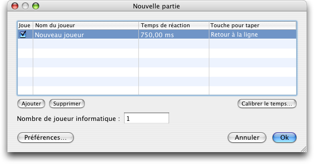

Lorsque vous demandez un nouveau jeu (⌘ + N), la fenêtre suivante apparaît :

Avant de commencer un nouveau jeu, il est conseillé de calibrer votre temps de réaction d'abord. Si vous choisissez un temps de réaction différent du votre, le jeu risque de devenir trop facile ou trop dur, au lieu de l'avoir de la difficulté choisie dans les préférences.
Vous devrez aussi choisir la touche avec laquelle vous taperez pendant le jeu. C'est obligatoire pour les nouveaux joueurs.